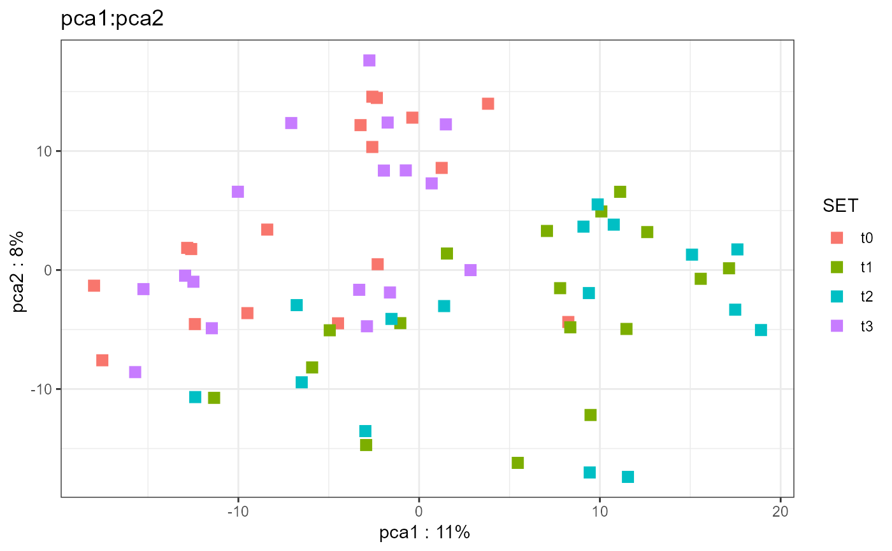
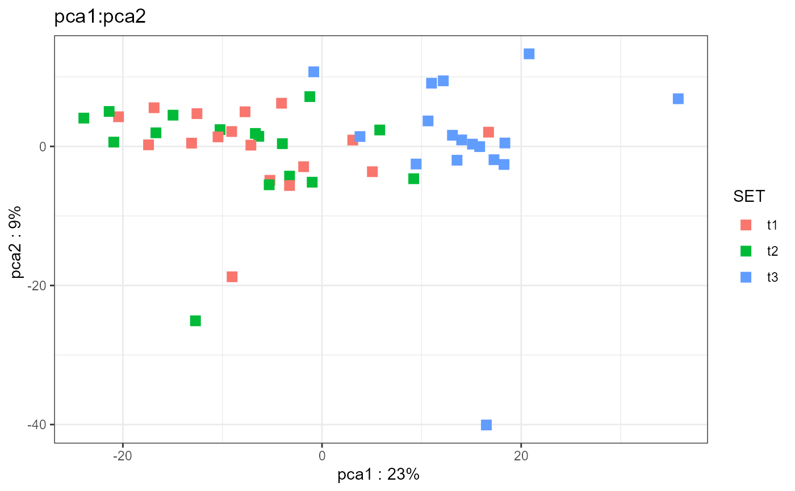

Subtract baseline level within block
subtract_baseline( object, subgroupvar, subgroupctr = slevels(object, subgroupvar)[1], block = NULL, assaynames = setdiff(assayNames(object), "weights"), verbose = TRUE ) subtract_pairs( object, subgroupvar, subgroupctr = slevels(object, subgroupvar)[1], block, assaynames = setdiff(assayNames(object), "weights"), verbose = TRUE ) subtract_differences(object, block, subgroupvar, verbose = TRUE)
Arguments
| object | SummarizedExperiment |
|---|---|
| subgroupvar | subgroup svar |
| subgroupctr | control subgroup |
| block | block svar (within which subtraction is performed) |
| assaynames | which assays to subtract for |
| verbose | TRUE/FALSE |
Value
SummarizedExperiment
Details
subtract_baseline subtracts baseline levels within block, using the
medoid baseline sample if multiple exist.
subtract_pairs also subtracts baseline level within block.
It cannot handle multiple baseline samples, but has instead been optimized
for many blocks
subtract_differences subtracts differences between subsequent levels,
again within block
Examples
# read require(magrittr) file <- download_data('atkin18.metabolon.xlsx') object0 <- read_metabolon(file, plot=FALSE)#>#>#>#>#> class: SummarizedExperiment #> dim: 975 67 #> metadata(3): analysis file pca #> assays(1): metabolon #> rownames(975): 48762 34404 ... 49260 49562 #> rowData names(18): feature_id feature_name ... pca1 pca2 #> colnames(67): t0.C01 t0.C02 ... t3.D18 t3.D19 #> colData names(17): sample_id SAMPLE_NAME ... pca1 pca2# subtract_baseline: takes medoid of baseline samples if multiple object <- subtract_baseline(object0, block='SUB', subgroupvar='SET')#>#>#>#>#>#> class: SummarizedExperiment #> dim: 975 50 #> metadata(35): analysis file ... file pca #> assays(1): metabolon #> rownames(975): 48762 34404 ... 49260 49562 #> rowData names(18): feature_id feature_name ... pca1 pca2 #> colnames(50): t1.C01 t3.C01 ... t2.D19 t3.D19 #> colData names(17): sample_id SAMPLE_NAME ... pca1 pca2# subtract_pairs: optimized for many blocks object <- subtract_pairs( object0, block='SUB', subgroupvar='SET')#>#>#>#>#>#> class: SummarizedExperiment #> dim: 975 50 #> metadata(7): analysis file ... file pca #> assays(1): metabolonratios #> rownames(975): 48762 34404 ... 49260 49562 #> rowData names(18): feature_id feature_name ... pca1 pca2 #> colnames(50): t1.C01 t1.C02 ... t3.D18 t3.D19 #> colData names(17): sample_id SAMPLE_NAME ... pca1 pca2# subtract differences object <- subtract_differences(object0, block='SUB', subgroupvar='SET')#>#>#>#>#>#> class: SummarizedExperiment #> dim: 975 51 #> metadata(1): pca #> assays(1): metabolon #> rownames(975): 48762 34404 ... 49260 49562 #> rowData names(3): feature_id pca1 pca2 #> colnames(51): C01.t1_t0 C01.t2_t1 ... D19.t2_t1 D19.t3_t2 #> colData names(6): sample_id feature_name ... pca1 pca2